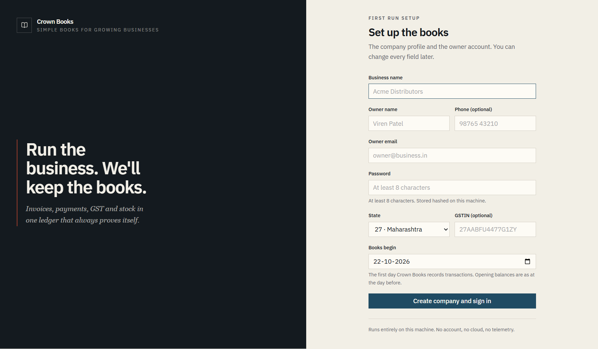
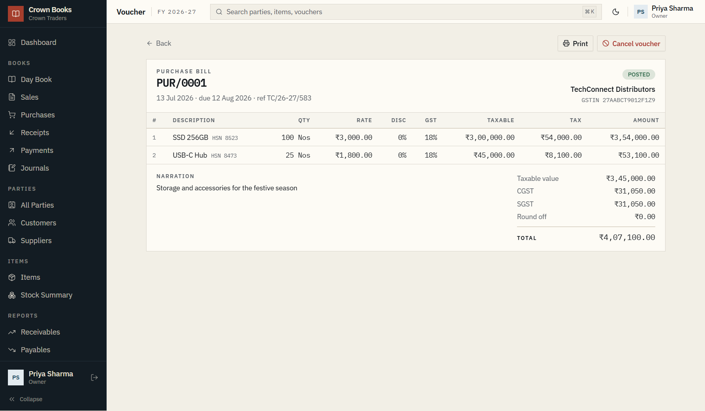
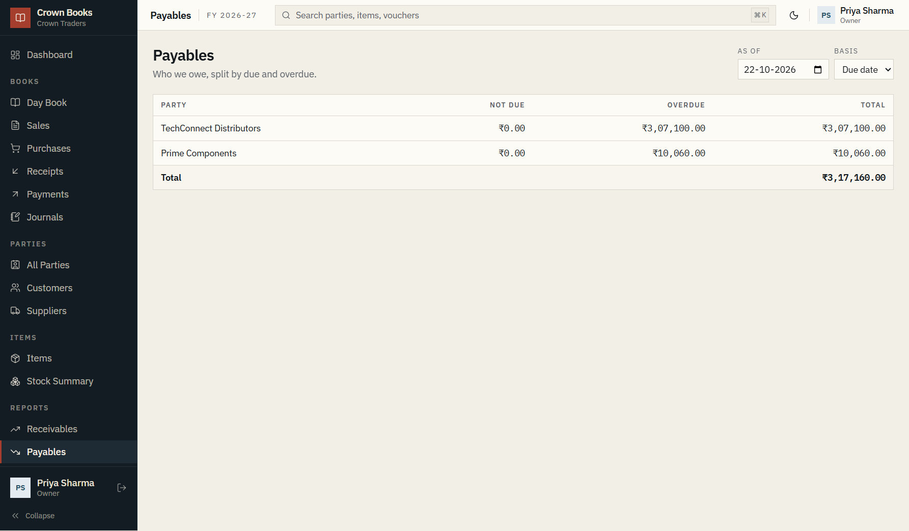
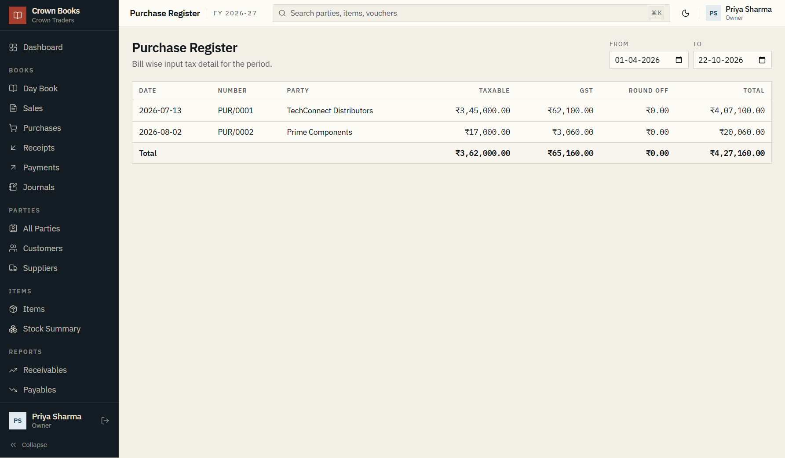
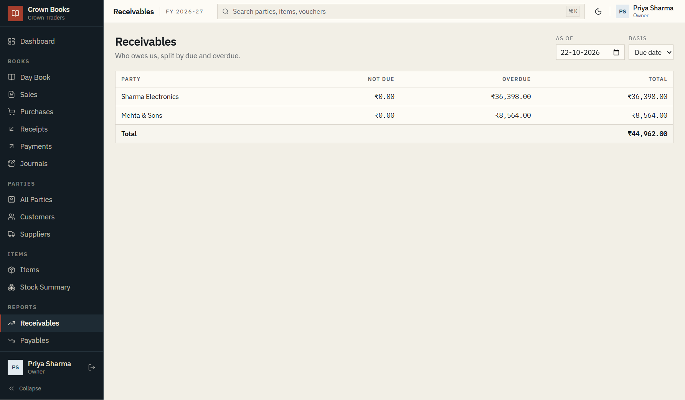
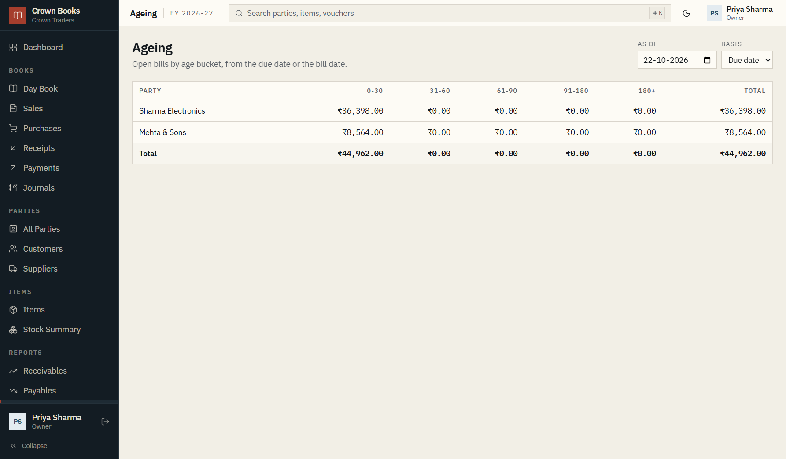
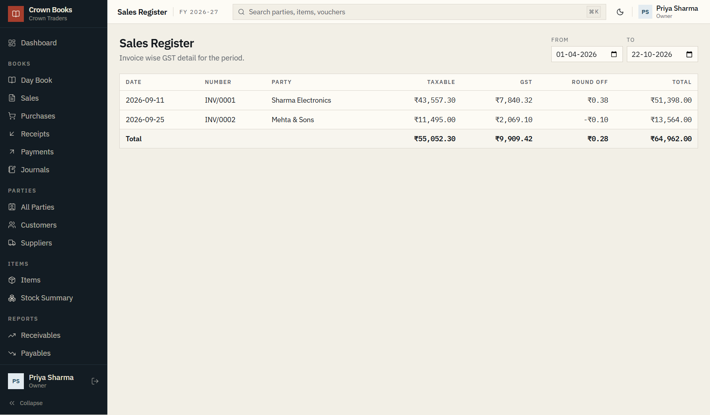
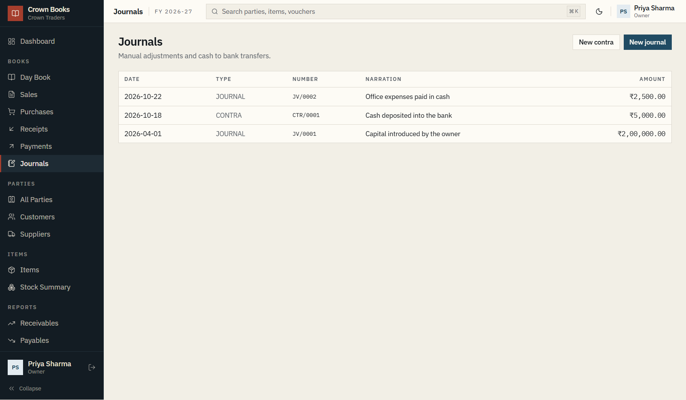
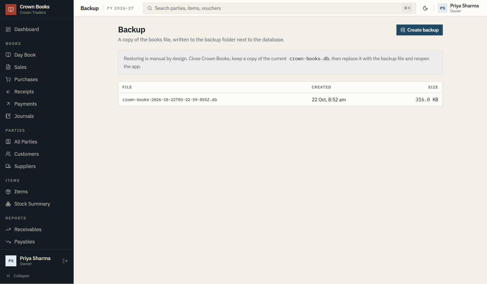

For billing and accounts staff
A step-by-step guide to parties, items, bills, invoices,
receipts, payments, stock, reports and backups.
October 2026
Built around the Crown Traders
example company
Read this first
Your books, one step at a time
Crown Books · 1.0
Crown Books keeps the accounts of one business on this computer. It answers three questions:
who owes us, who do we owe, and do the books balance. This guide shows the actual screens and
the exact buttons to press.
01
Who owes us?
Sales invoices, receipts, receivables and ageing.
02
Who do we owe?
Purchase bills, payments, payables and due dates.
03
Do the books balance?
Trial balance, profit and loss, and the balance sheet.
Before you start
Business name, address, state and GSTIN.
Owner name, email and a password of at least 8 characters.
The date your books should begin.
Customer and supplier list, with phone and GSTIN where known.
Item list with HSN or SAC, unit, GST rate, sale and purchase price.
Opening stock, opening party balances and cash or bank balances.
Copies of unpaid customer invoices and supplier bills.
How to read a step
Button and field names appear in bold exactly as they appear on screen.
Numbers and voucher numbers appear in monospace.
Tip
Do one chapter at a time. The first five steps in chapter 1 are enough to post your first
invoice. Everything else can wait until you need it.
Important
Posted vouchers are never edited. If a bill is wrong, cancel it with a reason and enter a
fresh one. The cancelled number is kept forever.
What the guide covers
Chapter
You will learn
1
First run, sign in, the screen, and the anatomy of a voucher.
2
Company settings, chart of accounts and opening balances.
3
Customers and suppliers, credit terms and balances.
4
Goods, services, GST rates, opening stock and the stock summary.
5
Purchase bills, supplier payments, payables and the purchase register.
Contents at a glance
Chapters 6 to 10
Chapter
You will learn
6
Sales invoices, printing, receipts, receivables and ageing.
7
Journals, contra transfers, cancellation and corrections.
8
Day book, trial balance, profit and loss, and balance sheet.
9
Backups, restore, and the daily safety routine.
10
Shortcuts, voucher series, common messages, glossary and checklists.
Your first path through the book
01Set upCompany, books begin, parties and items.
→
02BuyPost a purchase bill and pay the supplier.
→
03SellPost an invoice, print it, record the receipt.
→
04CheckTrial balance, profit and loss, backup.
Symbols used in this guide
Label
Meaning
Tip
A faster or safer way to do the same job.
Important
A mistake that changes the books or the GST return.
Bold
The exact name of a button, field or page.
INV/0001
A voucher number or a value you will see on screen.
1 2 3 on a screenshot
A callout. Find the same number in the list under the picture.
Tip
If you only have ten minutes, read 1.2, 1.5, 3.2, 4.2, 5.2 and 6.2, then post one purchase and
one sale. That is enough to understand the whole application.
How the pieces fit
MASTERSWho and whatCompany, parties, items, accounts.
REPORTSWhat it meansTrial balance, profit and loss, balance sheet.
Contents
What is where
10 chapters · 31 figures
CHAPTER 01
Start here
1.1 Open the app · 1.2 First-run setup · 1.3 Sign in · 1.4 The screen ·
1.5 The anatomy of a voucher · 1.6 Your first five steps
CHAPTER 02
Company and opening balances
2.1 Company settings · 2.2 What “books begin” means · 2.3 Chart of accounts ·
2.4 Opening balances · 2.5 Reserved masters
CHAPTER 03
Customers and suppliers
3.1 One record per business · 3.2 Create a party · 3.3 Edit and deactivate ·
3.4 Read the party list · 3.5 Credit days and credit limit
CHAPTER 04
Items and stock
4.1 Goods and services · 4.2 Create an item · 4.3 Opening stock ·
4.4 Item list · 4.5 Stock summary · 4.6 How stock moves
CHAPTER 05
Buying: bills and payments
5.1 The buying flow · 5.2 New purchase bill · 5.3 What posting does ·
5.4 Print a purchase bill · 5.5 Pay a supplier · 5.6 Payables ·
5.7 Purchase register · 5.8 Buying checklist
CHAPTER 06
Selling: invoices and receipts
6.1 The selling flow · 6.2 New sales invoice · 6.3 GST and place of supply ·
6.4 Print or save the invoice · 6.5 Receipt from a customer · 6.6 Receivables and ageing ·
6.7 Sales register · 6.8 Selling checklist
CHAPTER 07
Adjustments and corrections
7.1 Posted means posted · 7.2 Cancel a voucher · 7.3 Journal ·
7.4 Contra · 7.5 The journals list · 7.6 When to ask your accountant
CHAPTER 08
Reports
8.1 How reports work · 8.2 Day book · 8.3 Trial balance · 8.4 Profit and loss ·
8.5 Balance sheet · 8.6 Report map
CHAPTER 09
Backup and safety
9.1 Create a backup · 9.2 Restore a backup · 9.3 When to back up ·
9.4 Safety rules · 9.5 This computer only
CHAPTER 10
Reference
10.1 Keyboard shortcuts · 10.2 Voucher series and status · 10.3 Messages and fixes ·
10.4 Glossary · 10.5 Daily, weekly and monthly · 10.6 Not active in this edition
Page numbers are in the footer. Figures are numbered by chapter, for example Figure 6.2.
The guide uses the Crown Traders example company, so the names and amounts in the screenshots
will differ from your own books.
Start by situation
A
New business
Chapter 1, then 2.1, 3, 4 and 6. Skip opening balances unless you already have stock or dues.
B
Moving from Tally or QuickBooks
Read 2.2 and 2.4 first. Bring the closing balances and open bills, then continue at chapter 5.
C
Daily billing clerk
Chapter 6 for sales, 5 for purchases, 8 for reports, and 9 for the end-of-day backup.
Chapter 01Start here
01
Start here
Open the app, create the company, sign in, and learn the one pattern every voucher follows.
By the end of this chapter you will know where everything lives.
In this chapter
Opening the app
First-run setup
Signing in again
The navigation rail and top bar
The anatomy of a voucher
Your first five steps
1.1 Open the app
Crown Books is installed on this computer. Open it from the Start menu or the desktop shortcut.
The app checks that this computer is the one the books were installed for. If you see
“This computer is not authorised”, stop and contact your administrator. The
application is not designed to be copied to another machine.
There is no internet connection, no cloud account and no sign-in to a website. Everything is
stored in a local database file on this computer.
1.2 First-run setup
The first time the app opens, it asks for the company and the owner account. This happens once.
You can change the company details later in Admin → Company.
Setup asks for
Why it matters
Business name
Printed on invoices; shown in the sidebar.
Owner name, phone, email
The first user. The email is the sign-in name.
Password
At least 8 characters; stored hashed on this machine.
State and GSTIN
Decide CGST + SGST or IGST and print the registration on documents.
Books begin
The first day this ledger records transactions; not the financial year.

Figure 1.1 The first-run screen. The company and owner are created together.
Business name. Enter the name you want on invoices, for example Crown Traders.
Owner name and Phone (optional). The owner is the first user and can do everything.
Owner email. This becomes your sign-in name. Use an address you check.
Password. At least 8 characters. It is stored hashed on this machine. There is no “forgot password” email in this edition; keep it somewhere safe.
State and GSTIN (optional). The state decides whether a sale is taxed as CGST + SGST or IGST. Enter the GSTIN exactly as registered, without spaces.
Books begin. The first day Crown Books records transactions. See 2.2 before you choose a mid-year date.
Click Create company and sign in.
Books begin is not the financial year
The financial year is the reporting period, usually 1 April to 31 March. Books begin is the day
this app starts keeping the ledger. If you are starting fresh on 1 April, both dates can be
1 April. If you are migrating in October, books begin is the day after your last entry in the
old system, while the financial year is still the current April-to-March year.
1.3 Sign in again
After setup, every launch shows the sign-in screen. Enter the owner email and password and click
Sign in. Staff accounts, when they are added in a later edition, will use the
same screen.
To leave the app, open the account menu at the top right and choose Sign out.
Closing the window is also safe. Nothing is lost when you sign out because every posted voucher
is already in the database.
1.4 The screen
Every page has the same frame: a dark navigation rail on the left, a thin top bar, and the page
itself. The rail is grouped by the work you are doing, not by database tables.
Figure 1.2 The dashboard for Crown Traders, with the navigation rail and the four headline numbers.
Rail group
What it is for
Dashboard
The four numbers: receivables, payables, cash and bank, vouchers posted.
Books
Day Book, Sales, Purchases, Receipts, Payments and Journals. These are the documents.
Parties
All Parties, Customers and Suppliers. One record per business.
Items
Items and Stock Summary. Goods and services, and what is on hand.
Reports
Receivables, Payables, Ageing, Trial Balance, Profit and Loss, Balance Sheet.
Masters
Chart of Accounts. Tax Rates and Units are reserved for a later edition.
Admin
Company, Users and Roles (reserved), and Backup.
The top bar shows the page name, the current financial year, and your account. The theme button
switches between the paper and dark palettes. The search box in the top bar is reserved for a
later edition; use the search field on each page instead.
1.5 The anatomy of a voucher
A voucher is any document that changes the books: an invoice, a bill, a receipt, a payment, a
journal or a contra. Every entry screen uses the same five-part pattern. Once you know one, you
know all of them.
01HeaderParty, date, due date, reference and place of supply.
→
02LinesItem, description, quantity, rate, discount and GST.
→
03TotalsTaxable value, tax, round off and the final total.
→
04PostThe server checks, numbers and writes the voucher.
The one rule that prevents most mistakesNothing is saved until you press Post. Closing the screen or pressing Cancel
discards the entry. The voucher number is assigned only when the post succeeds, and a posted
voucher is never edited.
1.6 Your first five steps
If you only want to see a complete cycle, do these five things in order. The rest of the guide
explains each one in detail.
Create the company in first-run setup. Use 1 April as books begin if you are starting a fresh year.
Add a customer and a supplier under Parties. One record each is enough to begin.
Add one item under Items. Enter its HSN, GST rate and sale price.
Post a purchase bill under Purchases. This brings stock in and creates the supplier payable.
Post a sales invoice under Sales. Then open the invoice and click Print to see the document.
Next: company settings and opening balances. If this is a brand-new business, you can skip most
of chapter 2 and come back when you need to add an account or correct an opening position.
Chapter 02Company and opening balances
02
Company and opening balances
The company profile is printed on every document. The chart of accounts is the list of ledgers
behind the reports. Opening balances are the one-time bridge from your old books.
In this chapter
Company identity and financial year
What “books begin” means
Chart of accounts and reserved ledgers
Opening balances, posted once
Reserved masters
2.1 Company settings
Open Admin → Company. The page has four sections: identity, financial year,
stock and rounding, and invoice terms.
Figure 2.1 Company settings. The identity is used on printed documents; the financial year drives numbering and reports.
Field
What to enter
Registered name
The name printed on invoices, usually the legal or trading name.
GSTIN, PAN, state code
Registration details. The state code must be two digits, for example 27 for Maharashtra.
Address, city, pincode
The address printed above the invoice lines.
Financial year starts
The month your reporting year starts. April is the default for India.
Books begin date
The first day this app records transactions. See 2.2.
Costing method
Keep Weighted average. This edition values stock at weighted average cost.
Round off
How the invoice total is rounded. Invoice total is the usual choice.
Default terms
Saved with the company. It is not printed on the current invoice layout in this edition.
Leave this untickedAllow selling below stock on hand is recorded as a setting but the current build
does not enforce a stock guard. Keep it unticked and check the stock summary before a large sale.
2.2 What “books begin” means
Books begin is the first day Crown Books is responsible for the ledger. Before that date, the
history lives in your old system, your accountant’s file, or nowhere. At that date you bring in
one opening position: what you own, what you owe, and what customers owe you.
It is not the financial year. A business can have a financial year from 1 April to 31 March and
still begin its Crown Books ledger on 1 October after migrating from Tally. The financial year
of an October invoice is still the current April-to-March year.
Situation
What to enter
Starting a new business
The day you want the books to start, often 1 April or the day of the first sale.
Fresh financial year
1 April of that year. Opening balances are the previous 31 March closing balances.
Migrating mid-year
The day after the last entry in the old system. Opening balances are as at the close of the day before.
Only using Crown Books for sales
Still use the real start date. Do not enter a later date just to avoid old data.
Opening balances are the day before
If the old system is closed on 30 September and books begin is 1 October, the opening balances
are the position at the close of 30 September. That is the same instant as the start of 1 October.
Post the opening voucher with the opening date, then start entering October transactions.
2.3 Chart of accounts
Every voucher writes to ledgers. The chart of accounts is the list of those ledgers, grouped into
assets, liabilities, equity, income and expenses. Crown Books seeds a working set so you do not
have to create one from scratch.
Figure 2.2 The chart of accounts. Rows marked Reserved are used by the posting engine and cannot be deactivated.
The reserved ledgers are not decoration. Sales, purchases, GST, inventory, cost of goods sold,
round off and the opening difference all have a fixed job. You can add your own ledgers for rent,
salaries, travel or any other expense without touching the reserved ones.
Click New account.
Enter a Name, for example Office Expenses.
Choose a Group. The group decides the nature; for example Indirect Expenses is an expense group.
Check the Type. It follows the group but can be adjusted.
Leave the opening balance at zero unless you are setting up the opening position.
Click Add account.
To set an opening balance on an existing account, use the Opening balance (INR)
and Side fields when the account is created. Dr means a debit
balance, Cr a credit balance. If you are not sure which side, ask your accountant
before posting.
2.4 Opening balances
Opening balances come from three places: the party record, the account record and the item
record. They are collected into one opening voucher so that the trial balance stays balanced.
Figure 2.3 The opening balances section in Company settings. It runs once, before the first real voucher.
Add the customer and supplier opening balances in the party records. Positive means the party owes you (Dr); negative means you owe the party (Cr).
Add the opening balance and side on any bank, cash, loan or capital account.
Add opening quantity and opening rate on each goods item. Services do not hold stock.
Open Admin → Company, scroll to Opening balances, and choose the Opening date.
Click Post opening balances. One OPN/0001 voucher is created.
Open the trial balance and check that debits equal credits. If there is a difference, it sits in Opening Balance Difference, which should be investigated, not ignored.
Do not count the same stock twice
If opening stock already includes goods, do not enter a purchase bill for those same goods. If
you want the purchase history, leave opening stock at zero and enter the historical purchase
bills instead. The same rule applies to opening party balances and old invoices.
After the opening voucher
The opening fields are locked. Corrections go through a journal, not by editing the opening
voucher. This is deliberate: the opening position must stay stable once you have reconciled it.
2.5 Reserved masters
Masters → Tax Rates and Masters → Units appear in the rail but
are reserved screens in this edition. GST rates are chosen on each item and can be overridden on
an invoice line. Units are seeded (Nos, Pcs, Kg, Ltr, Mtr and others) and chosen on the item.
Admin → Users and Roles is also reserved.
Next: parties. If you already entered the customer and supplier list during opening balances,
use chapter 3 to check the details and understand the balance column.
2.6 Opening balance checklist
The old system is closed and reconciled on the day before books begin.
Every customer and supplier opening balance is entered, with the correct Dr or Cr side.
Cash, bank, loans and capital are entered on the account records.
Opening stock quantity and rate are entered for goods, or left zero if you are bringing purchase history.
The opening date matches the day before the first new transaction.
The opening voucher is posted once.
The trial balance says “Debits equal credits” and Opening Balance Difference is zero or explained.
Migration example
The old system has entries up to 30 September. The owner wants Crown Books to start on 1 October.
Set Books begin to 1 October, enter balances as at 30 September, and post the
opening voucher dated 1 October. The first new sale is dated 1 October or later. The financial
year is still the current April-to-March year.
Chapter 03Customers and suppliers
03
Customers and suppliers
One record per business. The same business can be a customer and a supplier. The balance
column tells you whether they owe you or you owe them.
In this chapter
One record per business
Create a party
Edit and deactivate
Read the party list
Credit days and credit limit
3.1 One record per business
A party is a customer, a supplier, or both. Use one record for a business even if you buy from
and sell to them. The role is chosen when the party is created and is not changed later, because
the role decides which ledger accounts the party uses.
The balance is shown as Dr or Cr. For a customer, Dr means they
owe you. For a supplier, Cr means you owe them. A negative customer balance or a positive supplier
balance is possible after an advance or an overpayment; it is not automatically an error.
3.2 Create a party
Open Parties → All Parties and click New party.
Figure 3.1 The New party form, filled for a business that is both a customer and a supplier.
Name. The trading name you will recognise in lists, for example Gupta Traders.
Phone and Email. Optional, but useful when chasing a bill.
GSTIN. Enter the 15-character registration number. Leave blank for an unregistered party.
State code. Two digits. This is used to decide CGST + SGST or IGST on a sale.
Billing address. Printed on documents when available.
Credit days. The default due date on a new invoice. 30 means the invoice is due 30 days after the invoice date.
Credit limit (INR). A reference limit. It does not block a sale in this edition.
Opening balance (INR). Positive if the party owes you, negative if you owe the party. Leave zero for a new party.
Role. Tick Customer, Supplier, or both.
Click Add party.
3.3 Edit and deactivate
Use Edit on a row to correct a phone number, address, credit days or credit
limit. The role and the opening balance are fixed after the party is created. If a party is no
longer used, click Deactivate. The history stays in the books; the party stops
appearing in new-entry lists.
Tip
Deactivate a party instead of renaming it to “OLD”. Reports and old vouchers keep the original
name and history, and the list stays readable.
3.4 Read the party list
Figure 3.2 The parties list. The balance column is the net position across all posted vouchers.
The search box matches name, phone and GSTIN. The role buttons filter to All, Customers or
Suppliers. Show inactive reveals deactivated records. The Credit days
column is the default payment term, not the age of the current balance.
3.5 Credit days and credit limit
Credit days are copied to the due date when you choose the party on an invoice. You can change
the due date for an individual invoice. Ageing reports use the due date by default, so a wrong
credit term makes a bill look overdue earlier or later than it really is.
Credit limit is a reference figure for your team. In this edition it does not stop an invoice
from being posted. If a customer is near the limit, the person entering the sale must check.
3.6 Party checklist
The legal or trading name is the one you will recognise later.
GSTIN is 15 characters and the state code is two digits.
Customer, supplier or both is chosen correctly; the role cannot change later.
Credit days match the agreed terms.
Opening balance is zero for a new party, or the correct Dr / Cr amount for a migration.
Phone and email are present if the team chases bills.
The party appears in the right filter: Customers, Suppliers or All Parties.
Which role should I choose?
Role
Use it when
Customer
You sell to them. They appear in Sales and Receivables.
Supplier
You buy from them. They appear in Purchases and Payables.
Both
You buy and sell to the same business. One record keeps the net balance in one place.
Next: items and stock. Add at least one goods item before your first purchase bill, and one
service item if you sell services such as maintenance.
Chapter 04Items and stock
04
Items and stock
An item is anything you buy or sell: a physical product with stock, or a service with no
stock. The item carries the HSN or SAC, the unit, the GST rate and the default prices.
In this chapter
Goods and services
Create an item
Opening stock
The item list
The stock summary
How stock moves
4.1 Goods and services
A goods item carries stock. Buying it increases quantity, selling it decreases
quantity, and the stock summary shows what is left. A service item has no stock;
it is used for maintenance, consulting or any other work billed by quantity, hours or a flat rate.
4.2 Create an item
Open Items → Items and click New item.
Figure 4.1 The New item form, filled for a goods item with opening stock.
Name. The name that appears on the invoice, for example Wireless Keyboard.
SKU. Your internal code. Optional but useful for searching.
HSN / SAC. The classification code for GST. Goods use HSN, services use SAC.
Unit. Nos, Pcs, Kg, Ltr, Mtr and others are seeded.
GST rate. 0, 5, 12, 18 or 28 percent. The rate is copied to a new invoice line but can be changed there.
Service item (no stock). Tick for services.
Sale price and Purchase price (INR). These are defaults, not locked prices.
Opening qty and Opening rate (INR). Only for goods you already hold. These are fixed after the item is created.
Reorder level. A reference level for purchasing. It does not create an alert in this edition.
Click Add item.
4.3 Opening stock
Opening quantity and opening rate are included in the one-time opening voucher. They are not a
purchase bill. If you enter opening stock and then also enter a purchase bill for the same goods,
stock and cost will be counted twice.
Choose one methodOpening stock only: enter what you hold now and start buying from today.
Full purchase history: leave opening stock at zero and enter the old purchase
bills. Do not mix the two for the same goods.
4.4 The item list
Figure 4.2 The item list. Stock and prices are shown per item; service items are tagged.
The list shows HSN or SAC, unit, GST rate, stock on hand, sale price and purchase price. Use the
search box for name, SKU or HSN. Edit changes the descriptive fields and default prices; opening
quantity and rate stay fixed. Deactivate hides an item from new entries without deleting history.
4.5 Stock summary
Open Items → Stock Summary. This is a computed report, not a data-entry screen.
It reads every posted purchase, sale and return.
Figure 4.3 Stock on hand by item, with quantity and value at weighted average cost.
Quantity is what is left. Value is quantity multiplied by the weighted average cost of the item.
The total at the bottom is the inventory value that appears on the balance sheet. Services are
not shown because they hold no stock.
4.6 How stock moves
Action
Effect on stock
Effect on the books
Post a purchase bill
Quantity increases.
Creditor increases, inventory increases, input GST is recorded.
Post a sales invoice
Quantity decreases.
Customer owes you, sales and output GST increase, cost of goods sold is recorded.
Cancel a purchase or sale
The original movement is reversed.
The ledger effect is reversed; the voucher stays with status Cancelled.
Enter opening stock
Quantity starts at the opening figure.
Inventory and the opening difference are recorded once.
Why the stock value can change without a new purchase
The costing method is weighted average. When a new purchase arrives at a different rate, the
average cost of the remaining stock changes, so the value of the same quantity can move.
Next: buying. You will post a purchase bill, pay the supplier, and read the payables report.
Chapter 05Buying
05
Buying: bills and payments
A purchase bill brings stock in and creates what you owe the supplier. A payment reduces that
balance. The payables report tells you what is still open and when it is due.
In this chapter
The buying flow
New purchase bill
What posting does
Print a purchase bill
Pay a supplier
Payables and the purchase register
5.1 The buying flow
01Purchase billStock comes in. The supplier becomes a creditor.
→
02PaymentMoney goes out. Allocate it to the bill it settles.
→
03PayablesWhat is still owed, split into not due and overdue.
5.2 New purchase bill
Open Books → Purchases and click New bill. The screen is a bill,
not a payment. Enter what the supplier billed you.
Figure 5.1 A new purchase bill with two item lines. The total is calculated before posting.
Party. Choose the supplier. The list shows the current balance and credit days.
Date. The bill date. This decides the financial year and the register period.
Due date. Filled from the supplier’s credit days. Change it if the bill says otherwise.
Reference. The supplier’s bill number, for example TC/26-27/604.
Place of supply. The supplier’s state code. Same state gives CGST + SGST; a different state gives IGST.
Add line for each item. Choose the item or type a free-text description.
Enter Qty, Rate, Disc % and GST %. HSN and unit fill from the item but can be changed.
Check Taxable value, the tax split, Round off and Total.
Add a Narration that will make sense in six months.
Click Post bill. The number, for example PUR/0001, is assigned at that moment.
Line field
What it means
Item
A saved item, or Free text for a one-off purchase. A saved goods item moves stock.
Description
The words printed on the bill. Defaults to the item name.
HSN
The GST classification. Defaults from the item.
Qty and Unit
How much was received. Up to four decimal places.
Rate
The purchase rate before GST.
Disc %
Line discount. Leave 0 if there is none.
GST %
The tax rate for this line. It can differ from the item default.
5.3 What posting does
The supplier’s payable increases by the bill total.
Inventory increases by the taxable value of goods lines; services post to the expense or purchase ledger without stock.
Input CGST, SGST or IGST is recorded according to the place of supply.
The voucher gets a permanent number and appears in the purchase register and payables.
The bill is not the payment
Posting a purchase bill does not move money. It records the obligation. Use a payment voucher
when the money actually leaves.
5.4 Print a purchase bill
Open Purchases, click the bill number, and use Print. The print
dialog also lets you choose Save as PDF if you need a file for email or records.
The printed view carries the company name, supplier, bill number, lines, tax and total.

Figure 5.2 A posted purchase bill. Print is available here; Cancel voucher reverses the effect.
5.5 Pay a supplier
Open Books → Payments and click New payment. A payment can settle
one bill, several bills, or stay on account as an advance.
Figure 5.3 A supplier payment. The amount is 25,000, of which 20,000 is allocated to PUR/0001.
Party. Choose the supplier. The screen shows the current balance.
Date. The date money left, not the bill date.
Amount. The total paid, for example 25,000.
Method and Reference. Choose NEFT, UPI, cheque or cash and enter the bank reference.
The Open bills table lists unpaid purchase bills with their due dates and outstanding amounts.
Enter the amount against the bill being settled in Allocate. Leave the rest unallocated if it is an advance.
Check Paid, Allocated and On account at the bottom.
Click Post payment.
Situation
What to do
Pay one bill in full
Allocate the full outstanding amount to that bill.
Part payment
Allocate less than the outstanding. The rest stays open.
Pay several bills
Enter an allocation against each bill in the same payment.
Advance
Leave the allocation blank. The money sits on account until a bill arrives.
Pay more than the bill
Allocate the bill amount and leave the excess on account.
Cash and bank in this edition
Receipts and payments post to the Cash ledger. The Method list
is a label on the entry screen. To move money between cash and bank, use
Journals → New contra after the receipt or payment. Bank reconciliation is not
part of this edition.
5.6 Payables
Open Reports → Payables. The report shows who you owe, split into amounts not
yet due and amounts past the due date.

Figure 5.4 Payables as on 22 October 2026. Both suppliers are past their due dates in this example.
As of is the date you are looking at. Basis decides whether a bill
is measured by its bill date or its due date. Use Due date for collection and payment planning;
use Bill date when you want the age of the document itself.
5.7 Purchase register
Open Reports → Purchase Register from the report links or navigate directly.
It lists every purchase bill in the period with taxable value, GST, round off and total.

Figure 5.5 The purchase register for the financial year. Totals at the bottom tie to the purchase ledger.
5.8 Buying checklist
Supplier chosen, not the customer with a similar name.
Bill date and due date match the supplier’s bill.
Supplier’s bill number entered in Reference.
Place of supply is the supplier’s state.
Each line has the right quantity and rate.
GST rate matches the item, not the default from another item.
Total matches the paper bill to the paisa.
Next: selling. The sales screen is the mirror image, with one important difference: the place
of supply is the customer’s state, and it decides CGST + SGST or IGST.
Chapter 06Selling
06
Selling: invoices and receipts
An invoice records what a customer owes. A receipt records what they paid. Receivables and
ageing tell you who to chase and how old the bill is.
In this chapter
The selling flow
New sales invoice
GST and place of supply
Print or save the invoice
Receipt from a customer
Receivables and ageing
Sales register
6.1 The selling flow
01Sales invoiceCustomer owes you. Stock goes out. GST is recorded.
→
02ReceiptMoney comes in. Allocate it to the invoice it settles.
→
03ReceivablesWhat is still owed, with ageing and due dates.
6.2 New sales invoice
Open Books → Sales and click New invoice. Every sale is against
a customer; a cash sale is recorded as an invoice followed by a receipt.
Before you invoice
The customer record exists and the GSTIN is correct.
You know the customer’s state for the place of supply.
The item has the right GST rate and sale price.
The goods are in stock, or you have decided to sell anyway.
The order or purchase order number is in front of you.
Figure 6.1 A new sales invoice for a Maharashtra customer, so the tax is CGST + SGST.
Party. Choose the customer. The screen shows their balance, credit days and GSTIN.
Date. The invoice date. This decides the financial year and the sales register.
Due date. Filled from the customer’s credit days. Change it if the order says otherwise.
Reference. The customer’s purchase order number, if any.
Place of supply. The customer’s state code. Same state as your company gives CGST + SGST; a different state gives IGST.
Add line for each item. Choose the saved item or type a free-text description.
Enter Qty, Rate, Disc % and GST %.
Check the totals and add a Narration.
Click Post invoice. The number, for example INV/0001, is assigned on posting.
Place of supply is the most common GST mistake
The place of supply defaults to your company’s state. For an out-of-state customer, change it to
the customer’s state before posting. If you leave it on your own state, the invoice will charge
CGST + SGST instead of IGST and the GST return will be wrong.
6.3 GST and place of supply
GST is charged per line. The place of supply decides how the same 18 percent is split.
Place of supply
What is charged
Example
Same state as the company
CGST + SGST, half the rate each.
Company in 27 (Maharashtra), customer in 27. 18% becomes 9% CGST + 9% SGST.
Different state
IGST at the full rate.
Company in 27, customer in 29 (Karnataka). 18% becomes 18% IGST.
The tax is calculated on the taxable value after the line discount. The total is rounded according
to the company setting, usually at the invoice total. The summary on the right shows taxable value,
CGST, SGST, IGST, round off and total before you post.
6.4 Print or save the invoice
Open Sales, click the invoice number, and use Print. In the
system print dialog, choose a printer or Save as PDF. The printed page carries
the company name and GSTIN, the customer, the invoice number and date, the line items with HSN,
the tax split and the total.
Figure 6.2 A posted sales invoice. The status is POSTED; Print and Cancel voucher are at the top.
Figure 6.3 What the printed invoice looks like. The navigation and top bar are hidden on paper.
6.5 Receipt from a customer
Open Books → Receipts and click New receipt. A receipt can settle
one invoice, several invoices, or stay on account as an advance.
Figure 6.4 A customer receipt. 10,000 is received and allocated to INV/0001.
Party. Choose the customer. The screen shows the current balance.
Date. The date money was received.
Amount. The total received.
Method and Reference. UPI, NEFT, cheque or cash, and the reference number.
The Open invoices table lists unpaid invoices with due dates and outstanding amounts.
Enter the amount against the invoice being settled in Allocate.
Check Received, Allocated and On account.
Click Post receipt.
Advances and part payments
A receipt larger than the open invoice leaves the excess on account. A receipt with no allocation
is an advance. When the next invoice is posted, use a new receipt or adjust the advance through
a journal if your accountant prefers.
6.6 Receivables and ageing
Open Reports → Receivables for the customer totals, and
Reports → Ageing for the age buckets.

Figure 6.5 Receivables as on 22 October 2026. The overdue column is the money to chase first.

Figure 6.6 Ageing by party. Bills are grouped into 0–30, 31–60, 61–90, 91–180 and 180+ days.
Receivables shows two numbers per customer: not yet due, and overdue. Ageing splits the overdue
amount into buckets. Use the Basis selector to age by due date (the default) or
by bill date. A bill that is not yet due sits in Not due even if the invoice is old.
Who to chase first
Start with the largest amount in 61–90 and 91–180, not the largest total. Then check 31–60 for
customers who are about to become a bigger problem. A 180+ balance needs a decision: collect,
write off, or ask the accountant.
6.7 Sales register
The sales register lists every invoice in a period with taxable value, GST, round off and total.
It is the first check before a GST return or a management review.
Every invoice in the period is present, and none is cancelled by mistake.
The total GST agrees with the output tax in the trial balance.
The invoice with the largest value has the right place of supply.

Figure 6.7 The sales register for the financial year, with the period total at the bottom.
6.8 Selling checklist
Customer chosen, not a supplier with a similar name.
Invoice date and due date are correct.
Place of supply is the customer’s state, not the company’s default.
Each line has the right quantity, rate and GST rate.
Discount, if any, is on the correct line.
Total matches the order or the quotation.
Receipt allocated to the invoice, not left on account by mistake.
Invoice printed or saved as PDF and sent to the customer.
Next: corrections. Posted invoices and bills cannot be edited; learn how cancellation and
journals keep the audit trail intact.
Chapter 07Adjustments
07
Adjustments and corrections
The books keep a history. A mistake is corrected by cancelling the voucher and entering a new
one, or by posting a journal. Nothing is deleted.
In this chapter
Posted means posted
Cancel a voucher
Journal adjustments
Contra: cash to bank
The journals list
When to ask your accountant
7.1 Posted means posted
A posted voucher is part of the audit trail. You cannot edit its lines, party, date or amount.
If it is wrong, cancel it with a reason and enter a fresh voucher. The cancelled voucher stays
visible with status CANCELLED, its number is not reused, and its ledger and stock
effect is reversed.
7.2 Cancel a voucher
Open the voucher from Sales, Purchases, Receipts, Payments, Day Book or a report link.
Click Cancel voucher at the top right.
Enter a Reason of at least three characters. “Wrong party” is enough; “test” is not useful.
Click Cancel voucher in the dialog. The status becomes CANCELLED.
Enter the corrected voucher from the beginning.
Figure 7.1 Cancelling a voucher. The reason is required; Keep voucher backs out unchanged.
Do not cancel just to hide a bill
Cancellation reverses the ledger and stock effect, but the voucher remains in the day book with
its reason. It is for corrections, not for removing a real transaction from history.
7.3 Journal
A journal is a manual double entry. Use it for adjustments that are not a sale, purchase, receipt
or payment: owner capital, depreciation, an expense paid from cash, or an accountant’s correction.
Every journal needs at least two lines, and the total debits must equal the total credits. The
screen shows Balanced in green only when they match. The Post
button stays disabled when the journal is not balanced.
Before you journal
Write down the two account names and the amount before you open the screen. If you cannot name
both accounts, stop and ask the accountant. A journal entered to “see if it works” is harder to
clean up than a phone call.
Example
Debit
Credit
Owner introduces capital
Cash
Owner Capital
Office expense paid in cash
Office Expenses
Cash
Depreciation for the month
Depreciation
Accumulated Depreciation
Correct an over-posted expense
The account that was wrongly debited
The expense account
If you are unsure which accounts to use, do not guess. A wrong journal is harder to find than a
missing one. Ask the accountant to give you the two account names and the amount.
Figure 7.2 A balanced journal: Office Expenses is debited, Cash is credited, both for 2,500.
7.4 Contra
A contra moves money between two cash or bank accounts. The common case is depositing cash into
the bank. It is not a receipt or a payment, so it does not affect a customer or supplier.
Figure 7.3 A contra for 5,000 from Cash to Bank. The narration explains the transfer.
Open Books → Journals and click New contra.
Choose the From account, usually Cash.
Choose the To account, usually Bank.
Enter the Date and Amount.
Add a Narration, for example “Cash deposited into the bank”.
Click Post.
7.5 The journals list
The Journals page lists both manual journals and contra transfers, newest first. The Type column
tells you which one it is; the Number column is the voucher you can quote to your accountant.

Figure 7.4 Posted journals and contras, with the narration and amount.
7.6 When to ask your accountant
Opening balances do not tie to the old trial balance.
A GST return is due and the output or input tax looks wrong.
You need depreciation, prepaid expenses, provisions or any year-end adjustment.
A party balance is negative or a supplier balance is positive and you cannot explain it.
The trial balance does not say “Debits equal credits.”
Which correction do I need?
The mistake
What to do
Wrong party, date, item or amount on a posted bill
Cancel it with a reason and enter the correct voucher.
Wrong GST rate or place of supply on a posted invoice
Cancel and re-enter. Do not patch it with a journal; the GST return needs the corrected invoice.
Expense posted to the wrong ledger
Post a journal: debit the correct expense, credit the wrong one.
Owner put money into the business
Journal: debit Cash or Bank, credit Owner Capital.
Cash deposited into the bank
Contra: from Cash, to Bank. Not a receipt or payment.
Next: reports. Learn what each report answers, and the one check that proves the books are
internally consistent.
Chapter 08Reports
08
Reports
Reports are reads of posted vouchers. They do not store totals, so a cancelled voucher
disappears from the report and a new one appears immediately.
In this chapter
How reports work
Day book
Trial balance
Profit and loss
Balance sheet
Which report answers which question
8.1 How reports work
Every report reads the posted vouchers for the current company. A cancelled voucher is excluded
from the ledger effect. The date controls mean different things:
Control
Meaning
From / To
A period, for example 1 April to 22 October. Used by profit and loss, balance sheet and registers.
As of
A single date. Used by receivables, payables and ageing: what was open on that day.
Basis
Age by due date (default) or by bill date. Due date is better for collection; bill date is better for document age.
Three checks before you trust a report
Is the voucher posted, not cancelled?
Is the date range or as-of date the one you meant?
Does the trial balance still say “Debits equal credits”?
8.2 Day book
The day book lists every voucher in date order, whatever its type. It is the first place to look
when you cannot find a document.
Figure 8.1 The day book for October. Click any number to open the voucher.
The date range defaults to the current month. Change From and To
for an older period, use Search for a number or party, and filter by
Status to see only posted or cancelled documents.
The newest voucher is at the top of the list.
The number is the permanent one; quote it when asking for help.
A cancelled voucher remains visible with status CANCELLED.
8.3 Trial balance
The trial balance lists every account with a debit or credit balance. If the total of the debit
column equals the total of the credit column, the ledger is internally consistent. It does not
prove that the business made a profit; it proves that every voucher had two sides.
Figure 8.2 The trial balance. The green line at the bottom confirms that debits equal credits.
Read it by group. Assets and expenses normally sit on the debit side; liabilities, equity and
income on the credit side. A party can appear on either side because the balance is net.
8.4 Profit and loss
Profit and loss answers one question: did the business make money in this period? It shows income,
expenses and the net profit. The period is controlled by From and To.
Figure 8.3 Profit and loss for 1 April to 22 October 2026. Cost of goods sold is the cost of the items that were sold.
Sales is shown net of returns. Cost of goods sold is the weighted average cost of the stock that
left. Expenses include round off and any journals you posted to expense accounts. Net profit is
the green figure at the bottom; a loss is shown in red.
8.5 Balance sheet
The balance sheet is a photograph at a date: what the business owns, what it owes, and the owner’s
stake. It must satisfy:
Assets = Liabilities + Equity
Assets
Cash, bank, stock, money customers owe you, and things the business owns.
Liabilities and equity
Suppliers, loans, GST payable, owner capital and the profit kept in the business.
Figure 8.4 The balance sheet. Equity includes owner capital and the current period profit.
Inventory is valued at weighted average cost. Customer and supplier balances are net. The current
period profit is added to equity automatically, so the sheet balances without a manual closing
entry.
8.6 Report map
Report
Question it answers
When to use it
Receivables
Who owes us, and how much is overdue?
Weekly collection review.
Ageing
How old are the unpaid bills?
Prioritise the oldest debts.
Payables
Who do we owe, and what is due?
Weekly payment run.
Day book
What was posted on a date?
Find a voucher or check an entry.
Sales register
What did we sell, and what GST did we charge?
Before a GST return or a sales review.
Purchase register
What did we buy, and what input GST was recorded?
Before a GST return or a cost review.
Trial balance
Do the books balance?
Month end, before any report is trusted.
Profit and loss
Did we make money this period?
Monthly management review.
Balance sheet
What do we own and owe?
Month end, bank or investor review.
Next: backups. A report is only useful if the database still exists tomorrow.
Chapter 09Backup and safety
09
Backup and safety
The books live in one SQLite file on this computer. A backup is a copy of that file. Restore is
deliberately manual so that a live database is never swapped underneath the app.
In this chapter
Create a backup
Restore a backup
When to back up
Safety rules
This computer only
9.1 Create a backup
Open Admin → Backup and click Create backup. The app writes a
timestamped copy, for example crown-books-2026-10-22T09-15-00-000Z.db,
into the backup folder next to the database.

Figure 9.1 The backup screen. Each row is a full copy of the books at that moment.
The file name, creation time and size are listed. A backup is a complete copy; it is not a delta.
Keep at least one copy on a different drive or a USB stick, not only on the same laptop.
9.2 Restore a backup
Close the app first
Restoring while Crown Books is open can corrupt the database. Close the app completely, including
any window in the taskbar, before replacing the file.
Create a fresh backup of the current books, even if they are wrong. It is your safety net.
Close Crown Books.
Open the app data folder. On Windows this is usually %APPDATA%\crown-books.
Rename the current crown-books.db to crown-books.before-restore.db.
Copy the chosen backup from the backups folder into the app data folder.
Rename the copy to crown-books.db.
Open Crown Books and sign in. Check the dashboard, trial balance and a recent invoice.
The backup folder is usually %APPDATA%\crown-books\backups. If your
installation uses a different folder, ask your administrator before moving files.
9.3 When to back up
When
Why
Before the first real bill
So you can return to an empty, known state.
Every day after posting
The day’s work is the most expensive thing to lose.
Before a GST return
Freeze the numbers you are about to file.
Before a restore or upgrade
Keep a copy of the current state even if it is imperfect.
Every Friday, off the machine
Protect against disk failure, theft or ransomware.
At month end
A clean copy for the accountant.
9.4 Safety rules
Do not edit the database with another program while Crown Books is open.
Do not copy the app folder to another computer. The install lock will refuse to run, and the data may not be the same.
Do not restore a backup over a live database. Close the app first.
Do not keep every backup on the same laptop. Use a second drive or a USB stick.
9.5 This computer only
Crown Books is offline by design. There is no cloud sync, no remote login and no automatic
off-site copy. That is a feature for privacy and a risk for disaster recovery. The backup routine
is the disaster recovery plan.
Test a restore before you need it
Create a backup and note the file name.
Close the app and follow 9.2 on a quiet day.
Open the dashboard and check the receivables figure.
Open the most recent invoice and confirm it prints.
Post one test receipt, then cancel it and note the reason.
Keep the pre-restore copy until you are satisfied.
The 3-2-1 rule, in plain language
Keep 3 copies, on 2 different kinds of storage, with
1 copy off the computer. For a small shop, that can be the live database, a
daily backup on the laptop, and a weekly copy on a USB drive kept elsewhere.
Backup log
Print this page or keep a note in the shop. A backup is only real when someone has checked that
it opens and contains the right day’s work.
Date
File name
Kept where
Checked by
Next: the reference chapter. Shortcuts, voucher series, common messages, the glossary and the
daily routine.
Chapter 10Reference
10
Reference
Shortcuts, numbering, messages, the words your accountant uses, and the routine that keeps the
books clean.
In this chapter
Keyboard shortcuts
Voucher series and status
Messages and fixes
Glossary
Daily, weekly and monthly routine
Not active in this edition
10.1 Keyboard shortcuts
Shortcut
Where
What it does
Alt + A
Sales and purchase entry
Adds a new line.
Ctrl + Enter
Sales and purchase entry
Posts the voucher.
Esc
Sales and purchase entry
Goes back without posting.
Tab
Every form
Moves to the next field.
Ctrl + P
Voucher detail
Opens the print dialog (the Print button is safer).
10.2 Voucher series and status
Series
Document
What it does
INV/
Sales invoice
Customer owes you; stock goes out; output GST.
PUR/
Purchase bill
You owe the supplier; stock comes in; input GST.
RCT/
Receipt
Money received from a customer.
PAY/
Payment
Money paid to a supplier.
JV/
Journal
Manual adjustment; debits must equal credits.
CTR/
Contra
Cash to bank or bank to cash.
OPN/
Opening
The one-time opening balances voucher.
CN/ · DN/
Credit / debit note
Reserved routes in this edition; not exposed as a screen.
Status is either Posted or Cancelled.
Posted documents count in reports. Cancelled documents stay visible but their ledger and stock
effect is reversed. A number is never reused.
10.3 Messages and fixes
Message or symptom
What it means and what to do
“Debits equal credits.”
The trial balance is consistent. No action.
“The books do not balance.”
Stop. Take a backup and ask your accountant; do not post more entries to hide it.
“Opening balances have already been posted”
Only one opening voucher is allowed. Use a journal for corrections.
“Choose customer, supplier, or both”
The party role is missing. Edit the party while it is being created; roles are fixed after saving.
“GSTIN must be 15 characters”
Count the characters. Remove spaces and dashes.
“State code: two digits”
Use 27, not “Maharashtra” or “MH”.
“Password must be at least 8 characters”
Use a longer password. There is no email reset in this edition.
“This computer is not authorised”
The install lock does not match. Contact your administrator; do not copy the app from another PC.
The invoice is not in the list
Check the date range. Lists default to the current month.
The report is empty
Check the As of or From/To dates, and confirm the voucher is Posted, not Cancelled.
10.4 Glossary
Word
Plain meaning
Receivable
Money a customer owes you.
Payable
Money you owe a supplier.
Debtor
The customer side of receivables.
Creditor
The supplier side of payables.
Debit (Dr)
One side of every entry. For a customer balance, Dr usually means they owe you.
Credit (Cr)
The other side. For a supplier balance, Cr usually means you owe them.
Ledger
A named account that collects movements, for example Cash or Sales.
Voucher
Any posted document: invoice, bill, receipt, payment, journal or contra.
Narration
The note printed on the voucher that explains it.
Allocation
Linking a receipt or payment to the bill it settles.
On account
Money received or paid that is not yet linked to a bill.
Ageing
How old unpaid bills are, grouped into 30-day buckets.
HSN / SAC
The GST classification code for goods / services.
CGST / SGST
The two halves of GST on a sale inside one state.
IGST
GST on a sale across state lines.
COGS
Cost of goods sold: what the items you sold cost you.
Opening balance
The position brought forward on the first day of the books.
Contra
A transfer between cash and bank.
Journal
A manual adjustment with matched debits and credits.
Trial balance
A list of every account balance, used to prove debits equal credits.
10.5 Daily, weekly and monthly routine
Every day
Post today’s sales invoices.
Post supplier bills as they arrive.
Enter receipts and payments, with allocations.
Create a backup at the end of the day.
Every week
Open Receivables and chase the oldest overdue bills.
Open Payables and plan the week’s payments.
Check Stock Summary for items below reorder level.
Copy the latest backup to a USB drive or another machine.
Every month
Check the Trial Balance says “Debits equal credits.”
Read Profit and Loss and compare it with the previous month.
Read the Balance Sheet and explain any large movement.
Reconcile the bank statement outside the app; use contra for transfers.
Create a month-end backup for the accountant.
Every year
Confirm the financial year start month in Company settings.
Take a full backup before the new year’s first entry.
Ask the accountant about closing journals and depreciation.
10.6 Not active in this edition
These items appear in the navigation or in a form but are reserved or only partly wired. Do not
build a process around them yet.
Item
Status in this edition
Global search in the top bar
Reserved. Use the search field on each page.
Tax Rates and Units masters
Reserved screens. GST rates are chosen on the item; units are seeded.
Users and Roles
Reserved. The owner account is the only active user.
Credit notes and debit notes
Routes exist but no screen is exposed. Cancel and re-enter for now.
Excel export
Not available. Use the on-screen report and the print dialog.
Bank reconciliation and GST return working papers
Not available. Use the registers and your accountant’s filing tool.
Invoice terms on the printed page
Saved in Company settings but not printed by the current layout.
Payment method as a bank account
The method is a label; receipts and payments post to Cash. Use Contra to move to Bank.
A good habit
At the end of every week, read the trial balance before you read anything else. If it does not
say “Debits equal credits”, stop and fix that first. Every other report depends on it.
10.7 Where to get help
Inside the business
The owner or administrator for access, installation and backups.
The accountant for journals, GST, depreciation and year-end entries.
The backup custodian for the weekly copy kept off the machine.
Before you call
The voucher number and date, if the problem is a document.
What you expected and what happened.
A screenshot of the message, if there is one.
Whether you have a backup from today.
Revision history
Edition
Date
Change
1.0
October 2026
First edition, covering company setup, masters, purchases, sales, receipts, payments, stock, journals, reports and backup.
End of the guide. Keep the PDF with the app, and keep a backup of the books somewhere else.